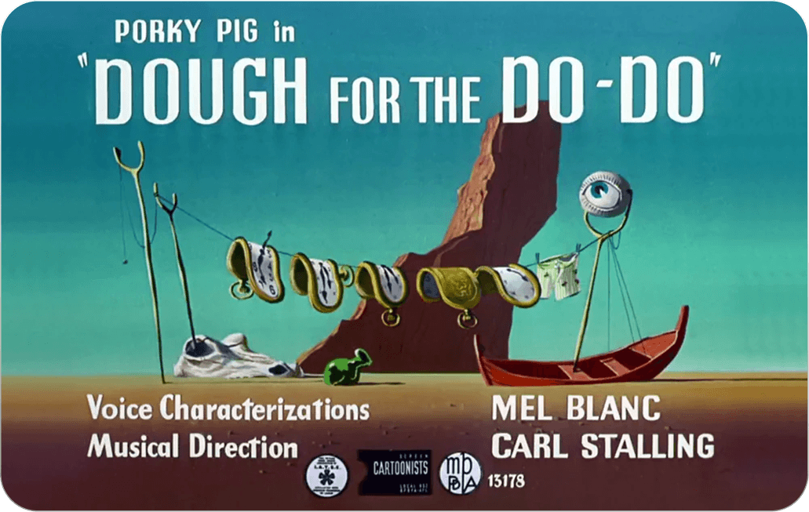
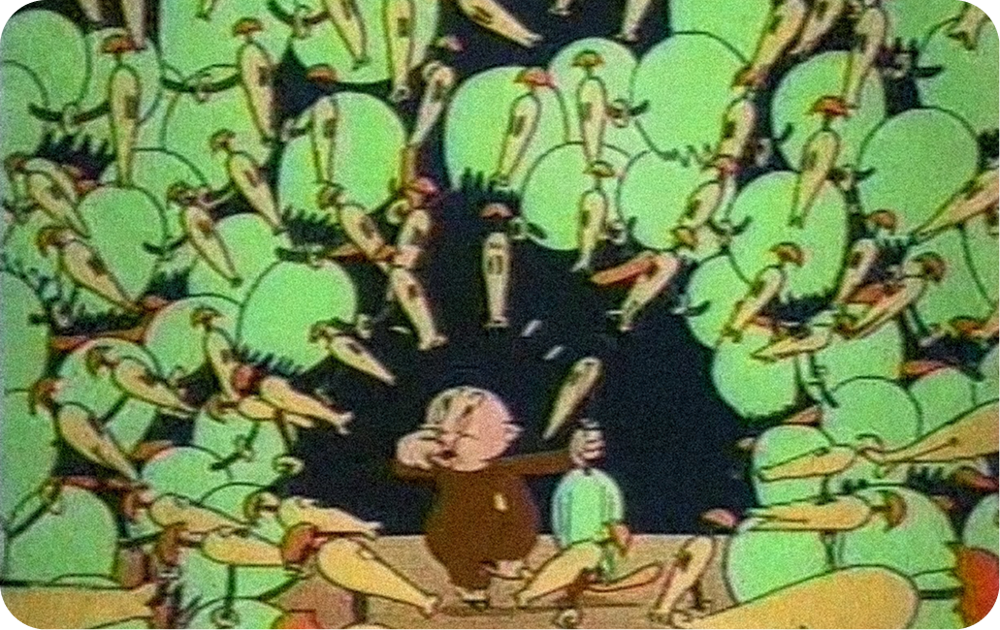

Alice’s Adventures In Wonderland (1865, Book)
The novel by Lewis Carrol brought the dodo to life in one of the story's earliest scenes where it presided over a "Caucus Race,” with no clear rules and no real winner. Carrol gave a moment of power to one of history's most mocked creatures; the dodo convinced Alice that the only prize she needed was one from her own pocket.
Alice In Wonderland
(1951, Film)
The Disney adaptation layered upon Carrol’s character with comedic animation and voice acting. This incarnation of the dodo cleverly reframed and recast the dodo as a ship’s captain who confidently shouts nonsensical orders but stays in charge of the others and the island.
Alice in Wonderland
(2010, Film)
Tim Burton brings the dodo to life as Uilleam, a wise elder dressed in a waistcoat and glasses who is among the first to recognise Alice as the true one foretold by prophecy. Instead of the bumbling, comic stereotype, this role presents the dodo as a loyal and respected advisor.
Ice Age
(2002, Film)
When a regimented flock of dodos appeared in one of the film's most memorable comedic scenes, the dodo was introduced to a new generation. Zealously preparing and hoarding melons to forestall their own extinction, again, their nature was no match for newcomers.
"The Ugly Chickens"
(Story, 1980 and Short Film, 2024)
When a regimented flock of dodos appeared in one of the film's most memorable comedic scenes, the dodo was introduced to a new generation. Zealously preparing and hoarding melons to forestall their own extinction, again, their nature was no match for newcomers.
DOUGH FOR THE D0-D0 (Short Film, 1949)
In the 1938 Looney Tunes short "Porky in Wackyland,” Porky Pig travels in search of the last dodo on earth for a prize of four sextillion dollars. When Porky discovers the dodo, a character named Yoyo, the clever bird plays many tricks on him — eventually revealing a whole hidden flock. The film was so popular that it was remade as a colorful adaptation, “Dough for the Do-Do,” in 1949. The dodo made its way into the National Film Registry when the story was added by the Library Congress in 2000.

CLIP FROM
THE FILM

FILM TITLE CARD